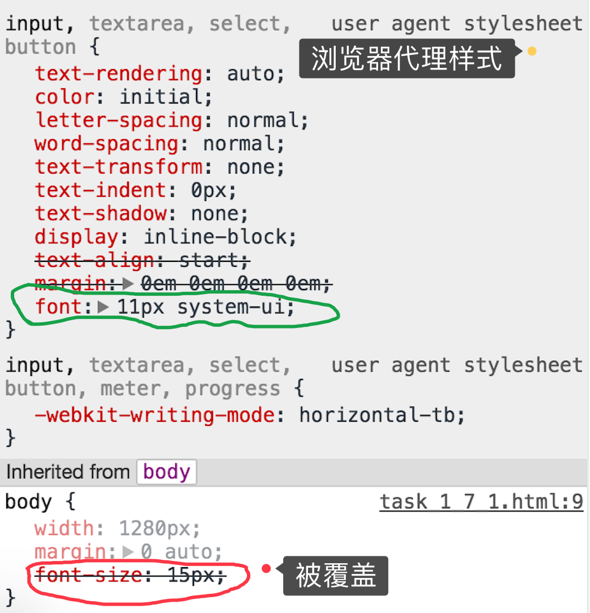

参考
Alloyteam 团队的移动开发规范概述
贤心博客的手机/移动前端开发需要注意的20个要点
meta 标签设置
<meta content="width=device-width, initial-scale=1.0, maximum-scale=1.0, user-scalable=0" name="viewport">
<meta content="yes" name="apple-mobile-web-app-capable">
<meta content="black" name="apple-mobile-web-app-status-bar-style">
<meta content="telephone=no" name="format-detection">
| name | description | 值 |
|---|---|---|
| viewpoint | 是否可以缩放Web页面 | 强制文档与设备的宽度保持1：1； 文档最大的宽度比列是1.0； user-scalable定义是否可缩放 |
| apple-mobile-web-app-capable | iphone私有， 允许全屏模式浏览， 还可以添加至桌面 | yes |
| apple-mobile-web-app-status-bar-style | iphone私有， safari顶端的状态条的样式 | 默认值为default（白色）， 可以设为black，black-translucent |
| format-detection | 格式检测 | 默认全开启， telephone=yes email=yes address=yes(跳转到地图) |
字体设置
使用无衬线体1.
表单元素会被浏览器代理样式所覆盖，因此需让表单元素继承字体属性2
body {
font-family: "Helvetica Neue", Helvetica, STHeiTi, sans-serif;
}
input, label, select, option, textarea, button, fieldset, legend {
font-family: inherit;
}
各操作系统所用字体如下
| OS 版本 | 语言 | 字体 |
|---|---|---|
| > iOS 4.0 | 英文 | Helvetica Neue |
| 中文 | STHeiTi3 | |
| > Android 4.0 | 中文/英文 | Roboto |
| < iOS 4.0 | 英文 | Helvetica |
| < Android 4.0 | 英文 | Droid Sans |
| 中文 | Droid Sans Fallback |
基础交互
设置全局的CSS样式，
避免图中的长按 弹出菜单与选中文本 的行为
a, img {
-webkit-touch-callout: none; /* 禁止长按链接与图片弹出菜单 */
}
html, body {
-webkit-user-select: none; /* 禁止选中文本（如无文本选中需求，此为必选项） */
user-select: none;
}
-
无衬线体（Sans-serif）专指西文中没有衬线的字体，与汉字字体中的黑体相对应。与衬线字体相反，该类字体通常是机械的和统一线条的，它们往往拥有相同的曲率，笔直的线条，锐利的转角。 ↩
-
 ↩
-
华文黑体并不存在iOS的字体库中(http://support.apple.com/kb/HT5878)， 但系统会自动将华文黑体
STHeiTi兼容命中系统默认中文字体黑体-简或黑体-繁↩